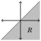
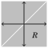

Part IV
Relations, Functions and
Cardinality
Chapter 11 Relations
In mathematics there are endless ways that two entities can be related to each other. Consider the following mathematical statements.
5 < 10 5 ≤ 5 6 = 5 | 80 7 > 4 x ≠ y 8 ∤ 3 a ≡ b ( mod n) 6 ∈ ℤ X ⊆ Y π ≈ 3.14 0 ≥−1 ∉ ℤ ℤ ⊈ ℕ
In each case two entities appear on either side of a symbol, and we interpret the symbol as expressing some relationship between the two entities. Symbols such as <,≤,=,|,∤,≥,>, ∈ and ⊆, etc., are called relations because they convey relationships among things.
Relations are significant. In fact, you would have to admit that there would be precious little left of mathematics if we took away all the relations. Therefore it is important to have a firm understanding of them, and this chapter is intended to develop that understanding.
Rather than focusing on each relation individually (an impossible task anyway since there are infinitely many different relations), we will develop a general theory that encompasses all relations. Understanding this general theory will give us the conceptual framework and language needed to understand and discuss any specific relation.
11.1 Relations
Before stating the theoretical definition of a relation, let’s look at a motivational example. This example will lead naturally to our definition.
Consider the set A = {1,2,3,4,5}. (There’s nothing special about this particular set; any set of numbers would do for this example.) Elements of A can be compared to each other by the symbol “<.” For example, 1 < 4, 2 < 3, 2 < 4, and so on. You have no trouble understanding this because the notion of numeric order is so ingrained. But imagine you had to explain it to a robot that had an obsession for detail but absolutely no understanding of the meaning of (or relationships between) integers. You might consider writing down for the robot the following set:
R = { (1,2), (1,3), (1,4), (1,5), (2,3), (2,4), (2,5), (3,4), (3,5), (4,5) }.
The set R encodes the meaning of the < relation for elements in A. An ordered pair (a, b) appears in the set if and only if a < b. If asked whether or not it is true that 3 < 4, the robot could look through R until it found the ordered pair (3,4); then it would know 3 < 4 is true. If asked about 5 < 2, it would see that (5,2) does not appear in R, so 5 ≮ 2. The set R, which is a subset of A × A, completely describes the relation < for A.
It may seem simple-minded at first, but this is the central idea of our main definition. This definition is general enough to describe not just the relation < for the set A = {1,2,3,4,5}, but any relation for any set A.
Definition 11.1 A relation on a set A is a subset R ⊆ A × A. We often abbreviate the statement (x, y) ∈ R as xR y. The statement (x, y) ∉ R is abbreviated as xR y.
Notice that a relation is a set, so we can use what we know about sets to understand and explore relations. But before getting deeper into the theory of relations, let’s look at some examples of Definition 11.1.
Example 11.1 Let A = {1,2,3,4}, and consider the following set:
R = {(1,1), (2,1), (2,2), (3,3), (3,2), (3,1), (4,4), (4,3), (4,2), (4,1)} ⊆ A × A.
The set R is a relation on A, by Definition 11.1. Since (1,1) ∈ R, we have 1R1. Similarly 2R1 and 2R2, and so on. However, notice that (for example) (3,4) ∉ R, so 3R 4. Observe that R is the familiar relation ≥ for the set A.
Chapter 1 proclaimed that all of mathematics can be described with sets. Just look at how successful this program has been! The greater-than-or-equal-to relation is now a set R. (We might even express this in the rather cryptic form ≥= R.)
Example 11.2 Let A = {1,2,3,4}, and consider the following set:
S = {(1,1), (1,3), (3,1), (3,3), (2,2), (2,4), (4,2), (4,4)} ⊆ A × A.
Here we have 1S1, 1S3, 4S2, etc., but 3 S 4 and 2 S 1. What does S mean? Think of it as meaning “has the same parity as.” Thus 1S1 reads “1 has the same parity as 1,” and 4S2 reads “4 has the same parity as 2.”
Example 11.3 Consider relations R and S of the previous two examples. Note that R∩S = {(1,1), (2,2), (3,3), (3,1), (4,4), (4,2)} ⊆ A×A is a relation on A. The expression x(R ∩ S)y means “x ≥ y, and x has the same parity as y.”
Example 11.4 Let B = {0,1,2,3,4,5}, and consider the following set:
U = {(1,3), (3,3), (5,2), (2,5), (4,2)} ⊆ B × B.
Then U is a relation on B because U ⊆ B × B. You may be hard-pressed to invent any “meaning” for this particular relation. A relation does not have to have any meaning. Any random subset of B×B is a relation on B, whether or not it describes anything familiar.
Some relations can be described with pictures. For example, we can depict the above relation U on B by drawing points labeled by elements of B. The statement (x, y) ∈ U is then represented by an arrow pointing from x to y, a graphic symbol meaning “x relates to y.” Here is a picture of U:
The next picture illustrates the relation R on the set A = {a, b, c, d}, where xR y means x comes before y in the alphabet. According to Definition 11.1, as a set this relation is R = {(a, b),(a, c),(a, d),(b, c),(b, d),(c, d)}. You may feel that the picture conveys the relation better than the set does. They are two different ways of expressing the same thing. In some instances pictures are more convenient than sets for discussing relations.
Although such diagrams can help us visualize relations, they do have their limitations. If A and R were infinite, then the diagram would be impossible to draw, but the set R might be easily expressed in set-builder notation. Here are some examples.
Example 11.5 Consider the set R = {(x, y) ∈ ℤ × ℤ : x − y ∈ ℕ} ⊆ ℤ × ℤ. This is the > relation on the set A = ℤ. It is infinite because there are infinitely many ways to have x > y where x and y are integers.
Example 11.6 The set R = {(x, x) : x ∈ ℝ} ⊆ ℝ × ℝ is the relation = on the set ℝ, because xR y means the same thing as x = y. Thus R is a set that expresses the notion of equality of real numbers.
Exercises for Section 11.1
- Let A = {0,1,2,3,4,5}. Write out the relation R that expresses > on A. Then illustrate it with a diagram.
- Let A = {1,2,3,4,5,6}. Write out the relation R that expresses | (divides) on A. Then illustrate it with a diagram.
- Let A = {0,1,2,3,4,5}. Write out the relation R that expresses ≥ on A. Then illustrate it with a diagram.
- Here is a diagram for a relation R on a set A. Write the sets A and R.
- Here is a diagram for a relation R on a set A. Write the sets A and R.
- Congruence modulo 5 is a relation on the set A = ℤ. In this relation xR y means x ≡ y (mod 5). Write out the set R in set-builder notation.
- Write the relation < on the set A = ℤ as a subset R of ℤ × ℤ. This is an infinite set, so you will have to use set-builder notation.
- Let A = {1,2,3,4,5,6}. Observe that ∅ ⊆ A × A, so R = ∅ is a relation on A. Draw a diagram for this relation.
- Let A = {1,2,3,4,5,6}. How many different relations are there on the set A?
- Consider the subset R = (ℝ×ℝ)−{(x, x) : x ∈ ℝ} ⊆ ℝ×ℝ. What familiar relation on ℝ is this? Explain.
- Given a finite set A, how many different relations are there on A? In the following exercises, subsets R of ℝ2 = ℝ×ℝ or ℤ2 = ℤ×ℤ are indicated by gray shading. In each case, R is a familiar relation on ℝ or ℤ. State it.


11.2 Properties of Relations
A relational expression xR y is an open sentence; it is either true or false. For example, 5 < 10 is true, and 10 < 5 is false. (Thus an operation like + is not a relation, because, for instance, 5+10 has a numeric value, not a T/F value.) Since relational expressions have T/F values, we can combine them with logical operators; for example, xR y ⇒ yRx is a statement or open sentence whose truth or falsity may depend on x and y.
With this in mind, note that some relations have properties that others don’t have. For example, the relation ≤ on ℤ satisfies x ≤ x for every x ∈ ℤ. But this is not so for < because x < x is never true. The next definition lays out three particularly significant properties that relations may have.
Definition 11.2 Suppose R is a relation on a set A.
1. Relation R is reflexive if xRx for every x ∈ A.
That is, R is reflexive if ∀ x ∈ A, xRx.
2. Relation R is symmetric if xR y implies yRx for all x, y ∈ A.
That is, R is symmetric if ∀ x, y ∈ A, xR y ⇒ yRx.
3. Relation R is transitive if whenever xR y and yRz, then also xRz.
That is, R is transitive if ∀ x, y, z ∈ A,((xR y) ∧ (yRz)) ⇒ xRz.
To illustrate this, let’s consider the set A = ℤ. Examples of reflexive relations on ℤ include ≤, =, and |, because x ≤ x, x = x and x| x are all true for any x ∈ ℤ. On the other hand, >, <, ≠ and ∤ are not reflexive, for none of the statements x < x, x > x, x ≠ x and x ∤ x is ever true.
The relation ≠ is symmetric, for if x ≠ y, then surely y ≠ x also. Also, the relation = is symmetric because x = y always implies y = x.
The relation ≤ is not symmetric, as x ≤ y does not necessarily imply y ≤ x. For instance 5 ≤ 6 is true, but 6 ≤ 5 is false. Notice (x ≤ y) ⇒ (y ≤ x) is true for some x and y (for example, it is true when x = 2 and y = 2), but still ≤ is not symmetric because it is not the case that (x ≤ y) ⇒ (y ≤ x) is true for all integers x and y.
The relation ≤ is transitive because whenever x ≤ y and y ≤ z, it also is true that x ≤ z. Likewise <,≥,> and = are all transitive. Examine the following table and be sure you understand why it is labeled as it is.
Relations on ℤ: < ≤ = | ∤ ≠
Reflexive no yes yes yes no no
Symmetric no no yes no no yes
Transitive yes yes yes yes no no
Example 11.7 Here A = {b, c, d, e}, and R is the following relation on A: R = {(b, b), (b, c), (c, b), (c, c), (d, d), (b, d), (d, b), (c, d), (d, c)}. This relation is not reflexive, for although bRb, cRc and dRd, it is not true that eRe. For a relation to be reflexive, xRx must be true for all x ∈ A.
The relation R is symmetric, because whenever we have xR y, it follows that yRx too. Observe that bRc and cRb; bRd and dRb; dRc and cRd. Take away the ordered pair (c, b) from R, and R is no longer symmetric.
The relation R is transitive, but it takes some work to check it. We must check that the statement (xR y ∧ yRz) ⇒ xRz is true for all x, y, z ∈ A. For example, taking x = b, y = c and z = d, we have (bRc ∧ cRd) ⇒ bRd, which is the true statement (T ∧ T) ⇒ T. Likewise, (bRd ∧ dRc) ⇒ bRc is the true statement (T ∧ T) ⇒ T. Take note that if x = b, y = e and z = c, then (bRe ∧ eRc) ⇒ bRc becomes (F ∧ F) ⇒ T, which is still true. It’s not much fun, but going through all the combinations, you can verify that (xR y ∧ yRz) ⇒ xRz is true for all choices x, y, z ∈ A. (Try at least a few of them.)
The relation R from Example 11.7 has a meaning. You can think of xR y as meaning that x and y are both consonants. Thus bRc because b and c are both consonants; but bRe because it’s not true that b and e are both consonants. Once we look at it this way, it’s immediately clear that R has to be transitive. If x and y are both consonants and y and z are both consonants, then surely x and z are both consonants. This illustrates a point that we will see again later in this section: Knowing the meaning of a relation can help us understand it and prove things about it.
Here is a picture of R. Notice that we can immediately spot several properties of R that may not have been so clear from its set description. For instance, we see that R is not reflexive because it lacks a loop at e, hence eRe.
Figure 11.1. The relation R from Example 11.7
In what follows, we summarize how to spot the various properties of a relation from its diagram. Compare these with Figure 11.1.
A relation is
...there is a
1. reflexive if
loop at x:
for each point x ...
A relation is
...there is also
symmetric if
an arrow from
2. whenever there is an
y back to x:
arrow from x to y ...
A relation is
y ...there is also y
transitive if
an arrow from
whenever there are
x to z:
arrows from x to y
and y to z ... 3.
(If x = z, this means y y
...there is also
that if there are a loop from
arrows from x to y x back to x.)
and from y to x ...
Consider the bottom diagram in Box 3, above. The transitive property demands (xR y ∧ yRx) ⇒ xRx. Thus, if xR y and yRx in a transitive relation, then also xRx, so there is a loop at x. In this case (yRx ∧ xR y) ⇒ yR y, so there will be a loop at y too.
Although these visual aids can be illuminating, their use is limited because many relations are too large and complex to be adequately described as diagrams. For example, it would be impossible to draw a diagram for the relation ≡ (mod n), where n ∈ ℕ. Such a relation would best be explained in a more theoretical (and less visual) way.
We next prove that ≡ (mod n) is reflexive, symmetric and transitive. Obviously we will not glean this from a drawing. Instead we will prove it from the properties of ≡ (mod n) and Definition 11.2. Pay attention to this example. It illustrates how to prove things about relations.
Example 11.8 Prove the following proposition.
Proposition Let n ∈ ℕ. The relation ≡ (mod n) on the set ℤ is reflexive, symmetric and transitive.
Proof. First we will show that ≡ (mod n) is reflexive. Take any integer x ∈ ℤ, and observe that n|0, so n | (x− x). By definition of congruence modulo n, we have x ≡ x (mod n). This shows x ≡ x (mod n) for every x ∈ ℤ, so ≡ (mod n) is reflexive.
Next, we will show that ≡ (mod n) is symmetric. For this, we must show that for all x, y ∈ ℤ, the condition x ≡ y (mod n) implies that y ≡ x (mod n). We use direct proof. Suppose x ≡ y (mod n). Thus n | (x − y) by definition of congruence modulo n. Then x − y = na for some a ∈ ℤ by definition of divisibility. Multiplying both sides by −1 gives y − x = n(−a). Therefore n | (y − x), and this means y ≡ x (mod n). We’ve shown that x ≡ y (mod n) implies that y ≡ x (mod n), and this means ≡ (mod n) is symmetric.
Finally we will show that ≡ (mod n) is transitive. For this we must show that if x ≡ y (mod n) and y ≡ z (mod n), then x ≡ z (mod n). Again we use direct proof. Suppose x ≡ y (mod n) and y ≡ z (mod n). This means n | (x − y) and n | (y − z). Therefore there are integers a and b for which x− y = na and y−z = nb. Adding these two equations, we obtain x−z = na+nb. Consequently, x−z = n(a+b), so n | (x−z), hence x ≡ z (mod n). This completes the proof that ≡ (mod n) is transitive.
The past three paragraphs have shown that the relation ≡ (mod n) is reflexive, symmetric and transitive, so the proof is complete. ■
As you continue with mathematics the reflexive, symmetric and transitive properties will take on special significance in a variety of settings. In preparation for this, the next section explores further consequences of these properties. But first work some of the following exercises.
Exercises for Section 11.2
- Consider the relation R = {(a,a),(b, b),(c, c),(d, d),(a, b),(b,a)} on set A = {a, b, c, d}. Is R reflexive? Symmetric? Transitive? If a property does not hold, say why.
- Consider the relation R = {(a, b),(a, c),(c, c),(b, b),(c, b),(b, c)} on the set A = {a, b, c}. Is R reflexive? Symmetric? Transitive? If a property does not hold, say why.
- Consider the relation R = {(a, b),(a, c),(c, b),(b, c)} on the set A = {a, b, c}. Is R reflexive? Symmetric? Transitive? If a property does not hold, say why.
- Let A = {a, b, c, d}. Suppose R is the relation R = {(a,a),(b, b),(c, c),(d, d),(a, b),(b,a),(a, c),(c,a), (a, d),(d,a),(b, c),(c, b),(b, d),(d, b),(c, d),(d, c)}. Is R reflexive? Symmetric? Transitive? If a property does not hold, say why.
- Consider the relation R = {(0,0),(,0),(0,,(, on ℝ. Is R reflexive? Symmetric? Transitive? If a property does not hold, say why.
- Consider the relation R = {(x, x) : x ∈ ℤ} on ℤ. Is this R reflexive? Symmetric? Transitive? If a property does not hold, say why. What familiar relation is this?
- There are 16 possible different relations R on the set A = {a, b}. Describe all of them. (A picture for each one will suffice, but don’t forget to label the nodes.) Which ones are reflexive? Symmetric? Transitive?
- Define a relation on ℤ as xR y if |x− y| < 1. Is R reflexive? Symmetric? Transitive? If a property does not hold, say why. What familiar relation is this?
- Define a relation on ℤ by declaring xR y if and only if x and y have the same parity. Is R reflexive? Symmetric? Transitive? If a property does not hold, say why. What familiar relation is this?
- Suppose A ≠ ∅. Since ∅ ⊆ A × A, the set R = ∅ is a relation on A. Is R reflexive? Symmetric? Transitive? If a property does not hold, say why.
- Let A = {a, b, c, d} and R = {(a,a),(b, b),(c, c),(d, d)}. Is R reflexive? Symmetric? Transitive? If a property does not hold, say why.
- Prove that the relation | (divides) on the set ℤ is reflexive and transitive. (Use Example 11.8 as a guide if you are unsure of how to proceed.)
- Consider the relation R = {(x, y) ∈ ℝ×ℝ : x − y ∈ ℤ} on ℝ. Prove that this relation is reflexive, symmetric and transitive.
- Suppose R is a symmetric and transitive relation on a set A, and there is an element a ∈ A for which aRx for every x ∈ A. Prove that R is reflexive.
- Prove or disprove: If a relation is symmetric and transitive, then it is also reflexive.
- Define a relation R on ℤ by declaring that xR y if and only if x2 ≡ y2 (mod 4). Prove that R is reflexive, symmetric and transitive.
- Modifying Exercise 8 (above) slightly, define a relation ∼ on ℤ as x ∼ y if and only if |x − y| ≤ 1. Say whether ∼ is reflexive. Is it symmetric? Transitive?
- The table on page 205 shows that relations on ℤ may obey various combinations of the reflexive, symmetric and transitive properties. In all, there are 23 = 8 possible combinations, and the table shows 5 of them. (There is some redundancy, as ≤ and | have the same type.) Complete the table by finding examples of relations on ℤ for the three missing combinations.
11.3 Equivalence Relations
The relation = on the set ℤ (or on any set A) is reflexive, symmetric and transitive. There are many other relations that are also reflexive, symmetric and transitive. Relations that have all three of these properties occur very frequently in mathematics and often play quite significant roles. (For instance, this is certainly true of the relation =.) Such relations are given a special name. They are called equivalence relations.
Definition 11.3 A relation R on a set A is an equivalence relation if it is reflexive, symmetric and transitive.
As an example, Figure 11.2 shows four different equivalence relations R1, R2, R3 and R4 on the set A = { − 1, 1, 2, 3, 4}. Each one has its own meaning, as labeled. For example, in the second row the relation R2 literally means “has the same parity as.” So 1R2 3 means “1 has the same parity as 3,” etc.
Relation R Diagram Equivalence classes
(see next page)
“is equal to” (=) −1 1 2
{ − 1}, {1}, {2},
R1 = {(−1,−1),(1,1),(2,2),(3,3),(4,4)}
3 4 {3}, {4}
“has same parity as” −1 1 2
{ − 1,1,3}, {2,4}
R2 = {(−1,−1),(1,1),(2,2),(3,3),(4,4),
(−1,1),(1,−1),(−1,3),(3,−1),
(1,3),(3,1),(2,4),(4,2)} 3 4
“has same sign as” −1 1 2 R3 = {(−1,−1),(1,1),(2,2),(3,3),(4,4), { − 1}, {1,2,3,4}
(1,2),(2,1),(1,3),(3,1),(1,4),(4,1),
(3,4),(4,3),(2,3),(3,2),(2,4),(4,2)} 3 4
“has same parity and sign as” −1 1 2
{ − 1}, {1,3}, {2,4}
R4 = {(−1,−1),(1,1),(2,2),(3,3),(4,4),
(1,3),(3,1),(2,4),(4,2)} 3 4
Figure 11.2. Examples of equivalence relations on the set A = {−1, 1, 2, 3, 4}
The above diagrams make it easy to check that each relation is reflexive, symmetric and transitive, i.e., that each is an equivalence relation. For example, R1 is symmetric because xR1 y ⇒ yR1x is always true: When x = y it becomes T ⇒ T (true), and when x ≠ y it becomes F ⇒ F (also true). In a similar fashion, R1 is transitive because (xR1 y ∧ yR1z) ⇒ xR1z is always true: It always works out to one of T ⇒ T, F ⇒ T or F ⇒ F. (Check this.)
As you can see from the examples in Figure 11.2, equivalence relations on a set tend to express some measure of “sameness” among the elements of the set, whether it is true equality or something weaker (like having the same parity).
It’s time to introduce an important definition. Whenever you have an equivalence relation R on a set A, it divides A into subsets called equivalence classes. Here is the definition:
Definition 11.4 Suppose R is an equivalence relation on a set A. Given any element a ∈ A, the equivalence class containing a is the subset {x ∈ A : xRa} of A consisting of all the elements of A that relate to a. This set is denoted as [a]. Thus the equivalence class containing a is the set [a] = {x ∈ A : xRa}.
Example 11.9 Consider the relation R1 in Figure 11.2. The equivalence class containing 2 is the set [2] = {x ∈ A : xR12}. Because in this relation the only element that relates to 2 is 2 itself, we have [2] = {2}. Other equivalence classes for R1 are [−1] = { − 1}, [1] = {1}, [3] = {3} and [4] = {4}. Thus this relation has five separate equivalence classes.
Example 11.10 Consider the relation R2 in Figure 11.2. The equivalence class containing 2 is the set [2] = {x ∈ A : xR22}. Because only 2 and 4 relate to 2, we have [2] = {2,4}. Observe that we also have [4] = {x ∈ A : xR24} = {2,4}, so [2] = [4]. Another equivalence class for R2 is [1] = {x ∈ A : xR21} = {−1,1,3}. In addition, note that [1] = [−1] = [3] = { − 1,1,3}. Thus this relation has just two equivalence classes, namely {2,4} and { − 1,1,3}.
Example 11.11 The relation R4 in Figure 11.2 has three equivalence classes. They are [−1] = { − 1} and [1] = [3] = {1,3} and [2] = [4] = {2,4}.
Don’t be misled by Figure 11.2. It’s important to realize that not every equivalence relation can be drawn as a diagram involving nodes and arrows. Even the simple relation R = {(x, x) : x ∈ ℝ}, which expresses equality in the set ℝ, is too big to be drawn. Its picture would involve a point for every real number and a loop at each point. Clearly that’s too many points and loops to draw.
We close this section with several other examples of equivalence relations on infinite sets.
Example 11.12 Let P be the set of all polynomials with real coefficients. Define a relation R on P as follows. Given f (x), g(x) ∈ P, let f (x) R g(x) mean that f (x) and g(x) have the same degree. Thus (x2 + 3x − 4) R (3x2 − 2) and (x3 + 3x2 − 4) R (3x2 − 2), for example. It takes just a quick mental check to see that R is an equivalence relation. (Do it.) It’s easy to describe the equivalence classes of R. For example, [3x2 + 2] is the set of all polynomials that have the same degree as 3x2 + 2, that is, the set of all polynomials of degree 2. We can write this as [3x2 + 2] = {ax2 + bx + c : a, b, c ∈ ℝ, a ≠ 0}.
Example 11.13 In Example 11.8 we proved that for a given n ∈ ℕ the relation ≡ (mod n) is reflexive, symmetric and transitive. Thus, in our new parlance, ≡ (mod n) is an equivalence relation on ℤ. Consider the case n = 3. Let’s find the equivalence classes of the equivalence relation ≡ (mod 3). The equivalence class containing 0 seems like a reasonable place to start. Observe that
[0] = {x ∈ ℤ : x ≡ 0(mod 3)} =
{x ∈ ℤ : 3 | (x − 0)} = {x ∈ ℤ : 3 | x} = {...,−3,0,3,6,9,...}.
Thus the class [0] consists of all the multiples of 3. (Or, said differently, [0] consists of all integers that have a remainder of 0 when divided by 3.) Note that [0] = [3] = [6] = [9], etc. The number 1 does not show up in the set [0] so let’s next look at the equivalence class [1]:
[1] = {x ∈ ℤ : x ≡ 1(mod 3)} = {x ∈ ℤ : 3 | (x − 1)} = {...,−5,−2,1,4,7,10,...}.
The equivalence class [1] consists of all integers that give a remainder of 1 when divided by 3. The number 2 is in neither of the sets [0] or [1], so we next look at the equivalence class [2]:
[2] = {x ∈ ℤ : x ≡ 2(mod 3)} = {x ∈ ℤ : 3 | (x − 2)} = {...,−4,−1,2,5,8,11,...}.
The equivalence class [2] consists of all integers that give a remainder of 2 when divided by 3. Observe that any integer is in one of the sets [0], [1] or [2], so we have listed all of the equivalence classes. Thus ≡ (mod 3) has exactly three equivalence classes, as described above.
Similarly, you can show that the equivalence relation ≡ (mod n) has n equivalence classes [0],[1],[2],..., [n − 1].
The idea of an equivalence relation is fundamental. In a very real sense you have dealt with equivalence relations for much of your life, without being aware of it. In fact your conception of fractions is entwined with an intuitive notion of an equivalence relation. To see how this is so, consider the set of all fractions, not necessarily reduced:
m
F = : m, n ∈ ℤ, n ≠ 0.
n
Interpret this set not as ℚ, but rather as the set of all possible fractions. For example, we consider the fractions and as being distinct (unequal) elements of F because their numerators and denominators don’t match. Of course and are equal numbers, but they are different fractions, so , ∈ F, but ≠ (meaning they are distinct, unequal elements of F).
. a . c
Define a relation = on F by saying = provided that ad = bc. Thus 1 . 2 −15 . 10 = because 1·4 = 2·2. Similarly, notice that = because −15·2 = −3·10.
. a . c a c
We have defined = so that = if and only if and are equal numbers,
. so = models your intuitive, ingrained understanding of when two different fractions are equal.
.
Observe that = is an equivalence relation on the set F of all fractions: It is
a a . a
reflexive because for any ∈ F the equation ab = ba guarantees =. To see
. a . c that = is symmetric, suppose =. This means ad = bc, so cb = da, which
c . a .
implies =. Exercise 16 below asks you to confirm that = is transitive.
This discussion shows that your everyday understanding of equality of fractions is an equivalence relation. The equivalence class containing, say, is the set : n ∈ ℤ, n ≠ 0} of all fractions that are numerically equal to. The takeaway is that you have for years lumped together equal fractions into equivalence classes under this equivalence relation.
Later, when you learned calculus, equivalence relations once again were just under the surface. The antiderivative f (x) dx of a function f (x) was defined to be the set of functions F(x) + C whose derivatives are f (x). This set is an equivalence class in the set of integrable functions, where two functions are related if their difference is a constant. (We are glossing over some fine points that will be cleared up in an advanced calculus course.)
Such examples underscore an important point: Equivalence relations arise in many areas of mathematics. This is especially true in the advanced realms of mathematics, where equivalence relations are the right tool for important constructions, constructions as natural and far-reaching as fractions, or antiderivatives. Learning about equivalence relations now paves the way to a deeper understanding of later courses, and work.
Exercises for Section 11.3
- Let A = {1,2,3,4,5,6}, and consider the following equivalence relation on A: R = {(1,1),(2,2),(3,3),(4,4),(5,5),(6,6),(2,3),(3,2),(4,5),(5,4),(4,6),(6,4),(5,6),(6,5)}. List the equivalence classes of R.
- Let A = {a, b, c, d, e}. Suppose R is an equivalence relation on A. Suppose R has two equivalence classes. Also aRd, bRc and eRd. Write out R as a set.
- Let A = {a, b, c, d, e}. Suppose R is an equivalence relation on A. Suppose R has three equivalence classes. Also aRd and bRc. Write out R as a set.
- Let A = {a, b, c, d, e}. Suppose R is an equivalence relation on A. Suppose also that aRd and bRc, eRa and cRe. How many equivalence classes does R have?
- There are two different equivalence relations on the set A = {a, b}. Describe them. Diagrams will suffice.
- There are five different equivalence relations on the set A = {a, b, c}. Describe them all. Diagrams will suffice.
- Define a relation R on ℤ as xR y if and only if 3x − 5y is even. Prove R is an equivalence relation. Describe its equivalence classes.
- Define a relation R on ℤ as xR y if and only if x2 + y2 is even. Prove R is an equivalence relation. Describe its equivalence classes.
- Define a relation R on ℤ as xR y if and only if 4|(x+3y). Prove R is an equivalence relation. Describe its equivalence classes.
- Suppose R and S are two equivalence relations on a set A. Prove that R ∩ S is also an equivalence relation. (For an example of this, look at Figure 11.2. Observe that for the equivalence relations R2,R3 and R4, we have R2 ∩ R3 = R4.)
- Prove or disprove: If R is an equivalence relation on an infinite set A, then R has infinitely many equivalence classes.
- Prove or disprove: If R and S are two equivalence relations on a set A, then R ∪S is also an equivalence relation on A.
- Suppose R is an equivalence relation on a finite set A, and every equivalence class has the same cardinality m. Express |R| in terms of m and |A|.
- Suppose R is a reflexive and symmetric relation on a finite set A. Define a relation S on A by declaring xSy if and only if for some n ∈ ℕ there are elements x1, x2,..., xn ∈ A satisfying xRx1, x1Rx2, x2Rx3, x3Rx4,..., xn−1Rxn, and xnRy. Show that S is an equivalence relation and R ⊆ S. Prove that S is the unique smallest equivalence relation on A containing R.
- Suppose R is an equivalence relation on a set A, with four equivalence classes. How many different equivalence relations S on A are there for which R ⊆ S? .
- Show that the relation = defined on page 213 is transitive.
11.4 Equivalence Classes and Partitions
This section collects several properties of equivalence classes.
Our first result proves that [a] = [b] if and only if aRb. This is useful because it assures us that whenever we are in a situation where [a] = [b], we also have aRb, and vice versa. Being able to switch back and forth between these two pieces of information can be helpful in a variety of situations, and you may find yourself using this result a lot. Be sure to notice that the proof uses all three properties (reflexive, symmetric and transitive) of equivalence relations. Notice also that we have to use some techniques from Chapter 8 (Proofs Involving Sets) in dealing with the sets [a] and [b].
Theorem 11.1 Suppose R is an equivalence relation on a set A. Suppose also that a, b ∈ A. Then [a] = [b] if and only if aRb.
Proof. Suppose [a] = [b]. Note that aRa by the reflexive property of R, so a ∈ {x ∈ A : xRa} = [a] = [b] = {x ∈ A : xRb}. But a belonging to {x ∈ A : xRb} means aRb. This completes the first part of the if-and-only-if proof.
Conversely, suppose aRb. We need to show [a] = [b]. We will do this by showing [a] ⊆ [b] and [b] ⊆ [a].
First we show [a] ⊆ [b]. Suppose c ∈ [a]. As c ∈ [a] = {x ∈ A : xRa}, we get cRa. Now we have cRa and aRb, so cRb because R is transitive. But cRb implies c ∈ {x ∈ A : xRb} = [b]. This demonstrates that c ∈ [a] implies c ∈ [b], so [a] ⊆ [b].
Next we show [b] ⊆ [a]. Suppose c ∈ [b]. As c ∈ [b] = {x ∈ A : xRb}, we get cRb. Remember that we are assuming aRb, so bRa because R is symmetric. Now we have cRb and bRa, so cRa because R is transitive. But cRa implies c ∈ {x ∈ A : xRa} = [a]. This demonstrates that c ∈ [b] implies c ∈ [a]; hence [b] ⊆ [a].
The previous two paragraphs imply that [a] = [b]. ■
To illustrate Theorem 11.1, recall that in Example 11.13 we worked out the equivalence classes of ≡ (mod 3). We observed that
[−3] = [9] = {..., −3, 0, 3, 6, 9, ...}.
Note that [−3] = [9] and −3 ≡ 9 (mod 3), just as Theorem 11.1 predicts. The theorem assures us that this will work for any equivalence relation. In the future you may find yourself using the result of Theorem 11.1 often. Over time it may become natural and familiar; you will use it automatically, without even thinking of it as a theorem.
Our next topic addresses the fact that an equivalence relation on a set A divides A into various equivalence classes. There is a special word for this kind of situation. We address it now, as you are likely to encounter it in subsequent mathematics classes.
Definition 11.5 A partition of a set A is a set of non-empty subsets of A, such that the union of all the subsets equals A, and the intersection of any two different subsets is ∅.
Example 11.14 Let A = {a, b, c, d}. One partition of A is {{a, b},{c},{d}}. This is a set of three subsets {a, b}, {c} and {d} of A. The union of the three subsets equals A; the intersection of any two subsets is ∅.
Other partitions of A are
{{a, b},{c, d}}, {{a, c},{b},{d}}, {{a},{b},{c},{d}}, {{a, b, c, d}},
to name a few. Intuitively, a partition is just a dividing up of A into pieces.
Example 11.15 Consider the equivalence relations in Figure 11.2. Each of these is a relation on the set A = {−1,1,2,3,4}. The equivalence classes of each relation are listed on the right side of the figure. Observe that, in each case, the set of equivalence classes forms a partition of A. For example, the relation R1 yields the partition {{ − 1},{1},{2},{3},{4}} of A. Likewise the equivalence classes of R2 form the partition {{ − 1,1,3},{2,4}}.
Example 11.16 Recall that Example 11.13 worked out the equivalence classes of the equivalence relation ≡ (mod 3) on the set ℤ. These equivalence classes give the following partition of ℤ:
...,−3,0,3,6,9,...},{...,−2,1,4,7,10,...},{...,−1,2,5,8,11,....
We can write it more compactly as {[0],[1],[2]}.
Our examples and experience suggest that the equivalence classes of an equivalence relation on a set form a partition of that set. This is indeed the case, and we now prove it.
Theorem 11.2 Suppose R is an equivalence relation on a set A. Then the set {[a] : a ∈ A} of equivalence classes of R forms a partition of A.
Proof. To show that {[a] : a ∈ A} is a partition of A we need to show two things: We need to show that the union of all the sets [a] equals A, and we need to show that if [a] ≠ [b], then [a] ∩ [b] = ∅.
Notationally, the union of all the sets [a] is [a], so we need to prove [a] = A. Suppose x ∈ [a]. This means x ∈ [a] for some a ∈ A. Since [a] ⊆ A, it then follows that x ∈ A. Thus [a] ⊆ A. On the other hand, suppose x ∈ A. As x ∈ [x], we know x ∈ [ a] for some a ∈ A (namely a = x). Therefore x ∈ [a], and this shows A ⊆ [a]. Since [a] ⊆ A and A ⊆ [a], it follows that [a] = A.
Next we need to show that if [a] ≠ [b] then [a] ∩ [b] = ∅. Let’s use contrapositive proof. Suppose it’s not the case that [a] ∩ [b] = ∅, so there is some element c with c ∈ [a] ∩ [b]. Thus c ∈ [a] and c ∈ [b]. Now, c ∈ [a] means cRa, and then aRc since R is symmetric. Also c ∈ [b] means cRb. Now we have aRc and cRb, so aRb (because R is transitive). By Theorem 11.1, aRb implies [a] = [b]. Thus [a] ≠ [b] is not true.
We’ve now shown that the union of all the equivalence classes is A, and the intersection of two different equivalence classes is ∅. Therefore the set of equivalence classes is a partition of A. ■
Theorem 11.2 says the equivalence classes of any equivalence relation on a set A form a partition of A. Conversely, any partition of A describes an equivalence relation R where xR y if and only if x and y belong to the same set in the partition. (See Exercise 4 for this section, below.) Thus equivalence relations and partitions are really just two different ways of looking at the same thing. In your future mathematical studies you may find yourself easily switching between these two points of view.
Exercises for Section 11.4
- List all the partitions of the set A = {a, b}. Compare your answer to the answer to Exercise 5 of Section 11.3.
- List all the partitions of the set A = {a, b, c}. Compare your answer to the answer to Exercise 6 of Section 11.3.
- Describe the partition of ℤ resulting from the equivalence relation ≡ (mod 4).
- Suppose P is a partition of a set A. Define a relation R on A by declaring xR y if and only if x, y ∈ X for some X ∈ P. Prove R is an equivalence relation on A. Then prove that P is the set of equivalence classes of R.
- Consider the partition P = ...,−4,−2,0,2,4,...},{...,−5,−3,−1,1,3,5,... of ℤ. Let R be the equivalence relation whose equivalence classes are the two elements of P. What familiar equivalence relation is R?
- Consider the partition P = 0}, {−1,1}, {−2,2}, {−3,3},{−4,4},... of ℤ. Describe the equivalence relation whose equivalence classes are the elements of P.
11.5 The Integers Modulo n
Example 11.8 proved that for any given n ∈ ℕ, the relation ≡ (mod n) is reflexive, symmetric and transitive, so it is an equivalence relation. This is a particularly significant equivalence relation in mathematics, and in the present section we deduce some of its properties.
To make matters simpler, let’s pick a concrete n, say n = 5. Let’s begin by looking at the equivalence classes of the relation ≡ (mod 5). There are five equivalence classes, as follows:
[0] = {x ∈ ℤ : x ≡ 0 (mod 5)} = {x ∈ ℤ : 5 | (x − 0)} = {..., −10, −5, 0, 5, 10, 15, ...}, [1] = {x ∈ ℤ : x ≡ 1 (mod 5)} = {x ∈ ℤ : 5 | (x − 1)} = { ..., −9, −4, 1, 6, 11, 16, ...}, [2] = {x ∈ ℤ : x ≡ 2 (mod 5)} = {x ∈ ℤ : 5 | (x − 2)} = { ..., −8, −3, 2, 7, 12, 17, ...}, [3] = {x ∈ ℤ : x ≡ 3 (mod 5)} = {x ∈ ℤ : 5 | (x − 3)} = { ..., −7, −2, 3, 8, 13, 18, ...}, [4] = {x ∈ ℤ : x ≡ 4 (mod 5)} = {x ∈ ℤ : 5 | (x − 4)} = { ..., −6, −1, 4, 9, 14, 19, ...}.
Notice how these equivalence classes form a partition of the set ℤ. We label the five equivalence classes as [0],[1],[2],[3] and [4], but you know of course that there are other ways to label them. For example, [0] = [5] = [10] = [15], and so on; and [1] = [6] = [−4], etc. Still, for this discussion we denote the five classes as [0], [1], [2], [3] and [4].
These five classes form a set, which we shall denote as ℤ5. Thus
ℤ5 = [0], [1], [2], [3], [4]
is a set of five sets. The interesting thing about ℤ5 is that even though its elements are sets (and not numbers), it is possible to add and multiply them. In fact, we can define the following rules that tell how elements of ℤ5 can be added and multiplied.
[a] + [b] = [a + b]
[a] · [b] = [ a · b ]
For example, [2]+[1] = [2+1] = [3], and [2]·[2] = [2·2] = [4]. We stress that in doing this we are adding and multiplying sets (more precisely equivalence classes), not numbers. We added (or multiplied) two elements of ℤ5 and obtained another element of ℤ5.
Here is a trickier example. Observe that [2] + [3] = [5]. This time we added elements [2],[3] ∈ ℤ5, and got the element [5] ∈ ℤ5. That was easy, except where is our answer [5] in the set ℤ5 = {[0],[1],[2],[3],[4]}? Since [5] = [0], it is more appropriate to write [2] + [3] = [0].
In a similar vein, [2] · [3] = [6] would be written as [2] · [3] = [1] because [6] = [1]. Test your skill with this by verifying the following addition and multiplication tables for ℤ5.
We call the set ℤ5 = {[0],[1],[2],[3],[4]} the integers modulo 5. As our tables suggest, ℤ5 is more than just a set: It is a little number system with its own addition and multiplication. In this way it is like the familiar set ℤ which also comes equipped with an addition and a multiplication.
Of course, there is nothing special about the number 5. We can also define ℤn for any natural number n. Here is the definition:
Definition 11.6 Let n ∈ ℕ. The equivalence classes of the equivalence relation ≡ (mod n) are [0],[1],[2],...,[n − 1]. The integers modulo n is the set ℤn = {[0],[1],[2],...,[n − 1]}. Elements of ℤn can be added by the rule [a] + [b] = [a + b] and multiplied by the rule [a] · [b] = [ab].
Given a natural number n, the set ℤn is a number system containing n elements. It has many of the algebraic properties that ℤ,ℝ and ℚ possess. For example, it is probably obvious to you already that elements of ℤn obey the commutative laws [a] + [b] = [b] + [a] and [a] · [b] = [b] · [a]. You can also verify the distributive law [a] · ([b] + [c]) = [a] · [b] + [a] · [c], as follows:
[a] · ([b] + [c]) = [a] · [b + c]
= [a(b + c)]
= [ab + ac]
= [ab] + [ac]
= [a] · [b] + [a] · [c].
The integers modulo n are significant because they more closely fit certain applications than do other number systems such as ℤ or ℝ. If you go on to take a course in abstract algebra, then you will work extensively with ℤn as well as other, more exotic, number systems. (In such a course you will also use all of the proof techniques that we have discussed, as well as the ideas of equivalence relations.)
To close this section we take up an issue that may have bothered you earlier. It has to do with our definitions of addition [a] + [b] = [a + b] and multiplication [a] · [b] = [ab]. These definitions define addition and multiplication of equivalence classes in terms of representatives a and b in the equivalence classes. Since there are many different ways to choose such representatives, we may well wonder if addition and multiplication are consistently defined. For example, suppose two people, Alice and Bob, want to multiply the elements [2] and [3] in ℤ5. Alice does the calculation as [2] · [3] = [6] = [1], so her final answer is [1]. Bob does it differently. Since [2] = [7] and [3] = [8], he works out [2]·[3] as [7]·[8] = [56]. Since 56 ≡ 1 (mod 5), Bob’s answer is [56] = [1], and that agrees with Alice’s answer. Will their answers always agree or did they just get lucky (with the arithmetic)?
The fact is that no matter how they do the multiplication in ℤn, their answers will agree. To see why, suppose Alice and Bob want to multiply the elements [a],[b] ∈ ℤn, and suppose [a] = [a′] and [b] = [b′]. Alice and Bob do the multiplication as follows:
Alice: [a] · [b] = [ab],
Bob: [a′] · [b′] = [a′b′].
We need to show that their answers agree, that is, we need to show [ab] = [a′b′]. Since [a] = [a′], we know by Theorem 11.1 that a ≡ a′ (mod n). Thus n | (a − a′), so a − a′ = nk for some integer k. Likewise, as [b] = [b′], we know b ≡ b′ (mod n), or n | (b − b′), so b − b′ = nℓ for some integer ℓ. Thus we get a = a′ + nk and b = b′ + nℓ. Therefore:
ab = (a′ + nk)(b′ + nℓ)
= a′b′ + a′nℓ + nkb′ + n2kℓ.
Hence ab − a′b′ = n(a′ℓ + kb′ + nkℓ). This means n | (ab − a′b′), so ab ≡ a′b′ (mod n), and from that we conclude [ab] = [a′b′]. Consequently Alice and Bob really do get the same answer, so we can be assured that the definition of multiplication in ℤn is consistent.
Exercise 8 (below) asks you to prove that addition in ℤn is similarly consistent.
Exercises for Section 11.5
- Write the addition and multiplication tables for ℤ2.
- Write the addition and multiplication tables for ℤ3.
- Write the addition and multiplication tables for ℤ4.
- Write the addition and multiplication tables for ℤ6.
- Suppose [a],[b] ∈ ℤ5 and [a] · [b] = [0]. Is it necessarily true that either [a] = [0] or [b] = [0]?
- Suppose [a],[b] ∈ ℤ6 and [a] · [b] = [0]. Is it necessarily true that either [a] = [0] or [b] = [0]? What if [a],[b] ∈ ℤ7?
- Do the following calculations in ℤ9, in each case expressing your answer as [a] with 0 ≤ a ≤ 8. (a) [8] + [8] (b) [24] + [11] (c) [21] · [15] (d) [8] · [8]
- Suppose [a],[b] ∈ ℤn, and [a] = [a′] and [b] = [b′]. Alice adds [a] and [b] as [a]+[b] = [a + b]. Bob adds them as [a′]+[b′] = [a′ + b′]. Show that their answers [a + b] and [a′ + b′] are the same.
11.6 Relations Between Sets
In the beginning of this chapter, we defined a relation on a set A to be a subset R ⊆ A × A. This created a framework that could model any situation in which elements of A are compared to themselves. In this setting, the statement xR y has elements x and y from A on either side of the R because R compares elements from A. But there are other relational symbols that don’t work this way. Consider ∈. The statement 5 ∈ ℤ expresses a relationship between 5 and ℤ (namely that the element 5 is in the set ℤ) but 5 and ℤ are not in any way naturally regarded as both elements of some set A. To overcome this difficulty, we generalize the idea of a relation on A to a relation from A to B.
Definition 11.7 A relation from a set A to a set B is a subset R ⊆ A ×B. We often abbreviate the statement (x, y) ∈ R as xR y. The statement (x, y) ∉ R is abbreviated as xR y.
Example 11.17 Suppose A = {1,2} and B = 𝒫(A) = {∅,{1},{2},{1,2}}. Then R = 1,{1}),(2,{2}),(1,{1,2}), (2,{1,2⊆ A×B is a relation from A to B. Note that 1R{1}, 2R{2}, 1R{1,2} and 2R{1,2}. The relation R is the familiar relation ∈ for the set A, that is, xR X means exactly the same thing as x ∈ X .
Diagrams for relations from A to B differ from diagrams for relations on A. Since there are two sets A and B in a relation from A to B, we have to draw labeled nodes for each of the two sets. Then we draw arrows from x to y whenever xR y. The following figure illustrates this for Example 11.17.
A B
Figure 11.3. A relation from A to B
The ideas from this chapter show that any relation (whether it is a familiar one like ≥, ≤, =, |, ∈ or ⊆, or a more exotic one) is really just a set. Therefore the theory of relations is a part of the theory of sets. In the next chapter, we will see that this idea touches on another important mathematical construction, namely functions. We will define a function to be a special kind of relation from one set to another, and in this context we will see that any function is really just a set.